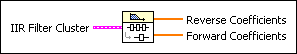
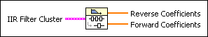

Cascade To Direct Coefficients VI
Owning Palette: Advanced IIR Filtering VIs
Requires: Full Development System
Converts IIR filter coefficients from the cascade form to the direct form.

 Add to the block diagram Add to the block diagram |
 Find on the palette Find on the palette |
Owning Palette: Advanced IIR Filtering VIs
Requires: Full Development System
Converts IIR filter coefficients from the cascade form to the direct form.

| Add to the block diagram |
Find on the palette |
 |
IIR Filter Cluster contains the cascaded form of IIR filter coefficients. This cluster is the output from one of the IIR coefficient design VIs: Butterworth Coefficients, Bessel Coefficients, Chebyshev Coefficients, Elliptic Coefficients, or Inv Chebyshev Coefficients.
| ||||||||||
 |
Reverse Coefficients contains the direct-form, reverse coefficients. | ||||||||||
|
Forward Coefficients contains the direct-form, forward coefficients. |
As an example, you can convert a cascade filter, composed of two second-order stages, to a direct-form filter as follows.
Reverse Coefficients
{a11, a12, a21, a22}  {1.0, a1, a2, a3, a4}
{1.0, a1, a2, a3, a4}
Forward Coefficients
{b01, b11, b02, b12, b22} {b0, b1, b2, b3, b4}
Refer to the IIR Cascade Filter VI for more information about cascade-form filtering and the IIR Filter VI for more information about direct-form filtering.